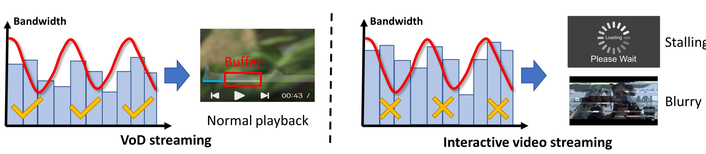
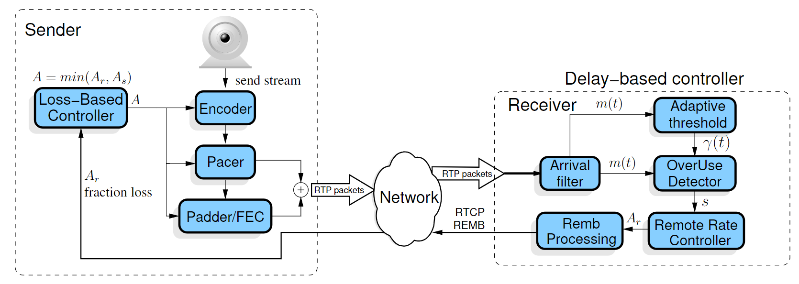
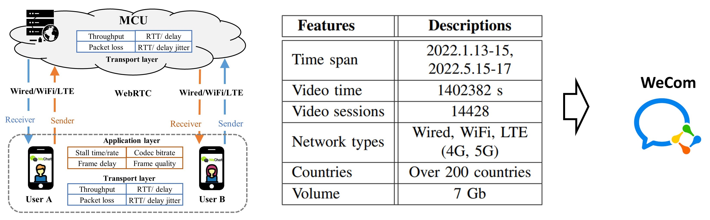
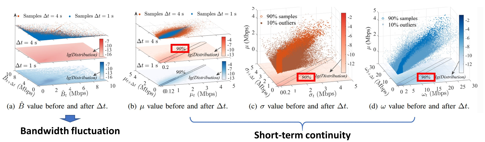
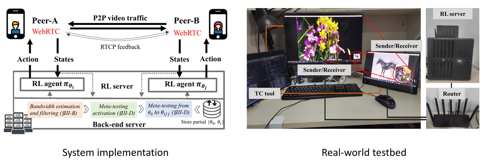
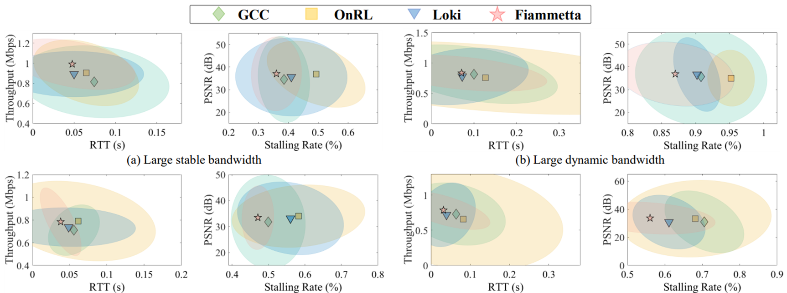

Fiammetta: Meta-RL Powered Congestion Control
Fiammetta: Meta-RL Powered Congestion Control1. Introduction2. Real-time Interactive Video Communication3. Existing Efforts3.1 Rule Based Solutions3.2 Learning Based Solutions4. Our Solution - Fiammetta4.1 The Big Picture4.2 Feasibility Study4.3 Training Tricks4.3.1 Action Space Design4.3.2 Policy Pretraining with Emulator4.3.3 Safeguard7. Performances8. What's Next?8.1 Fairness Concern8.2 Computational OverheadReferences
1. Introduction
Maximizing quality of experience (QoE) for interactive video streaming has been a long-standing challenge, as its delay-sensitive nature makes it more vulnerable to bandwidth fluctuations. While reinforcement learning (RL) has demonstrated great potential, existing works are either limited by fixed models or require enormous data/time for online adaptation, which struggle to fit time-varying and diverse network states.
In this essay, I will introduce our project Fiammetta, a meta-reinforcement-learning (Meta-RL) based congestion control algorithm that aims to tackle the above challenge. To begin with, we performed a large-scale measurement on the interactive video service of Tencent WeCom to study real-world network fluctuations. Surprisingly, our analysis shows that, compared to time-varying network metrics, network statistics exhibit noticeable short-term continuity, which offers opportunities for few-shot learning methods such as meta-learning. Building on short-term continuity, Fiammetta accumulates learning experiences through offline meta-training and enables fast online adaptation to changing network states through a few gradient updates. The results show that Fiammetta outperforms existing algorithms significantly, improving video bitrate by 3.6%-16.2% without increasing stalling rate.
The related paper I co-authored: "From Ember to Blaze: Swift Interactive Video Adaptation via Meta-Reinforcement Learning" will be published at INFOCOM'23 in this May.
2. Real-time Interactive Video Communication
Recent years have witnessed the emergence of ultralow-latency interactive video applications, such as WeChat, Skype, Zoom, Facetime, etc. Especially with the outbreak of COVID-19 that bounds people with social distancing, the demand for digital classrooms, video conferences, e-commerce, etc. has increased substantially. Polaris Market reports that the global interactive video market is expected to reach $10.23 billion by 20281.
Despite the rapid development, the quality of experience (QoE) of interactive video streaming remains unsatisfactory. For example, blurry images and frequent stalling. It is because compared with VoD streaming, interactive video streaming is more vulnerable to varying network conditions for its low-latency requirement for the following reasons:

Unlike Video on Demand (VoD) streaming, where the client has a video buffer of serval seconds, the interactive video client has a limited video buffer of hundreds of milliseconds, which makes it more vulnerable to imperfect bandwidth estimations.
The limited codec buffer degrades the compression efficiency. More bits are produced to be transmitted which make it vulnerable to limited bandwidth.
In response, congestion control (CC) algorithms are developed to adapt video-sending bitrate according to the estimated network bandwidth.
3. Existing Efforts
Existing efforts can be categorized into rule-based CC and learning-based CC.
3.1 Rule Based Solutions
Rule-based CC algorithms such as GCC1 and BBR2. They typically follow AIMD (additive-increase/multiplicative-decrease) / MIMD (multiplicative-increase/multiplicative-decrease)-like approaches that require a probing phase to converge sending bitrate to bandwidth. For instance, GCC iteratively estimates bandwidth and one-way queuing delay with a linear Kalman Filter (implemented in the "Arrival filter" in the following diagram), which assumes a static zero-mean Gaussian noise model.

The drawbacks of this paradigm are two-fold:
The application-layer video codec and transport-layer protocols are uncoordinated3. The bursty application-layer codec bitrate pattern (i.e., intermittent frame-by-frame delivery) often misleads the transport-layer’s network capacity estimation.
The probing phase suffers a slow convergence, leading to a low bandwidth utilization. Frequent change of the network state (handover in wireless networks, for instance) worsen the matter as the bottleneck link capacity and propagation delay change too fast for the prober to catch up.
3.2 Learning Based Solutions
To tackle problem 1, learning-based congestion control3 has been proposed. They replace the rule-based congestion control algorithms with deep reinforcement learning (DRL) models. However, they still suffer from the second problem imposed by fixed offline-learned neuron network parameters.
Recent studies45 investigate the paradigm of online learning. Specifically, they fine-tune the offline learned model online with transfer learning to adapt to unseen network conditions. Nevertheless, they require a large amount of data/time for transfer learning, which hinders fast adaptation to new network states.
To better understand the dilemma, the following figure showcases a network trace with four network states:

The model trained offline may perform poorly in the middle two unseen states. With the aid of online learning, things are getting better, but still far from optimal due to the slow adaptation of transfer learning, For example, tens of minutes, even hours. We aim to adapt quickly to diverse and time-varying network states, pushing QoE to the limit.
4. Our Solution - Fiammetta
4.1 The Big Picture
We resort to recent advances in few-shot adaptation methods such as meta-learning, more specifically, meta reinforcement learning (Meta-RL), as no optimal bitrate is available in the training phase. This idea leads us to Fiammetta, a Meta-Reinforcement-Learning-based bitrate adaptation algorithm for interactive video systems.
Fiammetta is based on model agnostic meta learning (MAML) framework, which consists of two phases: meta-training and meta-testing.

The goal of the meta-training phase is to obtain an initial model as a good starting point for further model adaptation. Specifically, the training consists of an inner loop and an outer loop. For every cycle of the outer loop update, a batch of tasks will be sampled from its prior distribution. Then, in the inner loop, the initial model interacts with a simulator given the generated traces of sampled tasks and is updated to maximize the pre-defined objective function. At the end of the inner loop, the gradients from all sampled tasks will be aggregated to update the initial model. Finally, meta-training provides better weight initialization for unseen new tasks.

In the meta-testing phase, the initial model adapts quickly to new tasks and generates a specialized sub-model with just a few gradient descents. It first identifies the appearance of new tasks. Once detected, it will activate meta-testing. Specifically, it generates network traces within the detected new task and updates the initial model to produce the sub-model accommodated to the new task, following the standard reinforcement learning pipeline.
4.2 Feasibility Study
Despite the potential of Meta-RL, one question remains: Is meta-learning fast enough to adapt? Typically, the adaptation process of meta-learning algorithms still requires several steps of gradient descent, which consumes 1 or 2 seconds on our server. Thus, we must first know how fast the real-world network state changes.

To investigate the characteristics of real-world network traces, we conduct a measurement study on a large-scale commercial network dataset collected by Tencent WeCom interactive video platform. The dataset consists of 14,000 real-world video sessions spanning around 390 hours.

We first demonstrate how the instant bandwidth evolves during a time period of 1s and 4s (subfigure (a)). We can see that the bandwidth fluctuates drastically and is highly unpredictable. However, if we apply a sliding window on the traces and analyze their statistics, we notice that there exists short-term continuity in the statistics (subfigure (b)-(d)). For example, during a period of 4 seconds, both the mean and standard deviation vary less than 200 kbps in 90% of the cases.
We name the continuations as network states, which is the basic unit of our adaptation algorithm. The short-term continuity provides opportunities for meta-learning, where Meta-RL has the potential to keep up with the change of network states.
4.3 Training Tricks
4.3.1 Action Space Design
In previous works45, the policy directly outputs the absolute bitrate. However, through our experiments, this approach performs poorly given highly dynamic bandwidth due to the limited bitrate choices and large action space. In response, we let the policy output the magnification, i.e.,
While Packet delay and delay jitter are more informative for reflecting network link congestions than absolute throughput in policy's state space, they are closely correlated with the relative changes of sending rate
Adopting magnification enables a more flexible control while decreasing the dimension of action space.
4.3.2 Policy Pretraining with Emulator
Ideally, reinforcement learning requires the policy to directly learn from the real-world environment. However, the sampling process of the testbed is too slow - only 10 samples(steps) per second. As such, 1 million steps consumes ~28 hours. In response, we build a emulator that can simulate packet-level network traffic (based on simple_emulator) which boosts the training process by ~50x.
The main difference between the emulator and testbed is the codec's behavior. To mitigate this sim-to-real problem, we then transfer the policy on the testbed for another 1 million steps. As the best hyper-parameters have been found during the emulator phase, this step is typically performed only once.
4.3.3 Safeguard
We adopt a hand-craft safeguard to prevent the policy from getting stuck in extreme cases (seconds of delay or extremely low sending rate) due to its imperfection. The safeguard greatly accelerates the training process. Throughout the training, the policy typically becomes progressively less random, and the safeguard is activated less and less.
For the detailed design of Fiammetta, please refer to our paper.
7. Performances
We build an end-to-end measurement testbed and exploit the real-world network traces sponsored by Tencent WeCom to test the performance of Fiammetta and baseline algorithms. Here is a quick glance at our system implementation and the testbed.

The testbed mainly consists of two PCs running WebRTC as a video traffic transceiver pair and one PC controlling network link through the TC (traffic control) tool. Besides, we implement Fiammetta and learning-based baseline algorithms on a remote RL server, and the video transceiver pair is connected to the RL server via an additional router to query the target bitrate. The RL server is a desktop equipped with an Intel Core i7-9700K CPU, Geforce RTX 1080Ti GPU, and 32 GB memory.

We start by showing the overall performances. We can see that Fiammetta improves QoE by 11.1%, 17.0%, and 26.7% compared with OnRL, Loki and GCC, respectively.

We further investigate its performance under different network conditions. The results show that Fiammetta consistently outperforms baseline methods across different network conditions.
8. What's Next?
8.1 Fairness Concern
In this work, we considered a simplified scenario where Fiammetta operates alone in the network link. In real-world deployment, fairness (receiving a no larger share of the network than other flows) against TCP connections and other video sessions is essential to a good CC algorithm.
8.2 Computational Overhead
In our framework, the computation of Fiammetta is offloaded to an RL server following the practice of previous works 4. However, our collaborators in Tencent suggested that a more efficient and mobile-friendly algorithm is preferred. A potential solution is integrating low-cost rule-based algorithms with high-performance learning-based algorithms 6 . We may delve into it in our future works.
References